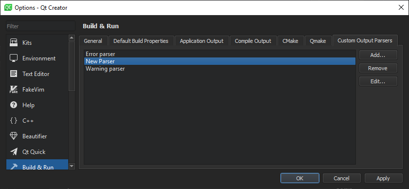
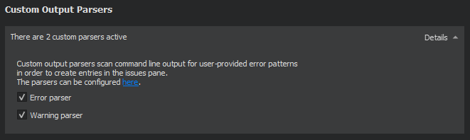

Using Custom Output Parsers
Custom output parsers scan command line output for error and warning patterns that you specify and create entries for found patterns in the Issues output pane.
To view or add custom output parsers, select Tools > Options > Build & Run > Custom Output Parsers.

To edit the settings of a custom output parser, select it in the list, and then select Edit.
To remove the selected parser, select Remove.
You can activate custom output parsers in the Custom Output Parsers section of the Build and Run settings, as well as in the custom compiler settings.
Specifying Settings for Custom Output Parsers

A custom output parser enables you to capture errors and warnings separately, according to the settings you specify in the Error and Warning tab.
To create a custom output parser:
- Select Tools > Options > Build & Run > Custom Output Parsers > Add.
- In the Error message capture pattern field, specify a regular expression to define what is an error. The custom parser matches the compile output line by line against the regular expression and displays errors in the Issues output pane. Create regular expression groups that contain the file name, line number and error message.
- In the Capture Positions field, map the regular expression groups to File name, Line number, and Message.
- In the Capture Output Channels field, specify whether messages from standard output, standard error, or both channels should be captured.
- In the Test group, you can test how the message that you enter in the Error message field is matched when using the current settings.
- Select OK to add the parser to the list of parsers and return to the Custom Output Parsers tab.
- Double-click the parser name to change it to something more descriptive than the default value.
Activating Custom Output Parsers

To activate a custom output parser in the Build or Run settings of a project:
- In the Custom Output Parsers section, select Details.
- Select custom parsers to activate them for building or running the project.